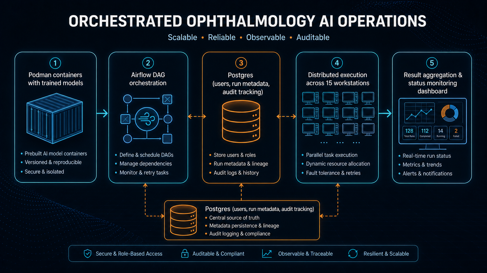

Distributed execution pattern for ophthalmology AI pipelines using containerized models, Airflow orchestration, and Postgres-backed user/run tracking.
This operations pattern targets reliable execution of trained ophthalmology models across multiple user sessions and distributed compute nodes.
The architecture combines containerized model runtimes, Airflow-managed task orchestration, and centralized Postgres metadata for run history, user control, and execution traceability.

Bundle trained models and dependencies in Podman containers for repeatable execution.
Schedule and execute DAG-based workflow steps for model processing and output handling.
Store users, runs, and execution status in Postgres to support multi-user operations.
Support concurrent jobs across distributed machines while keeping orchestration centralized.